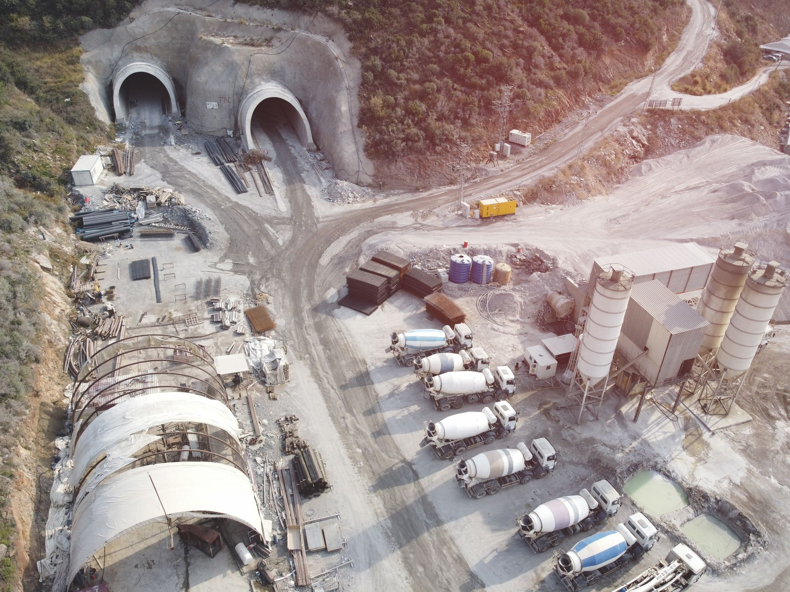
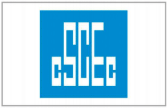
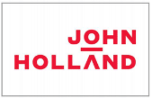
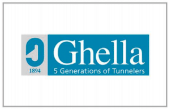
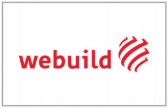
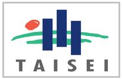
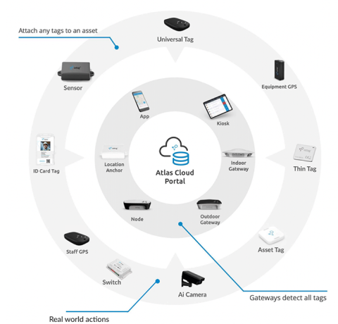
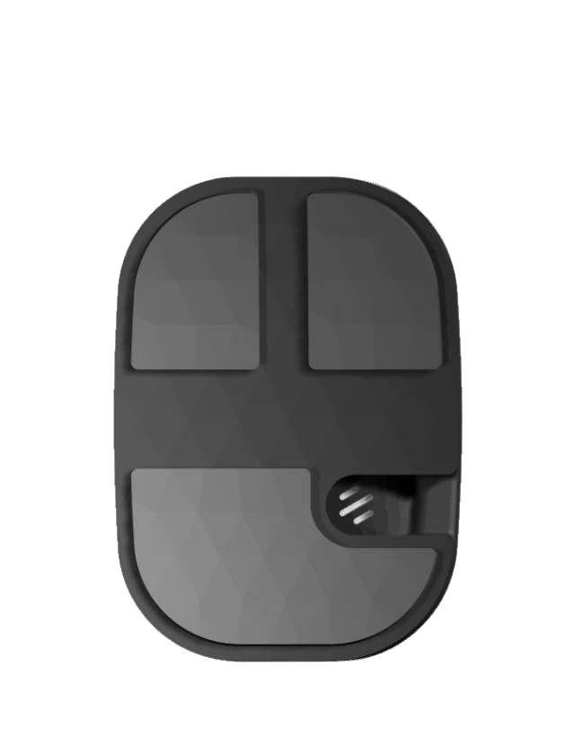
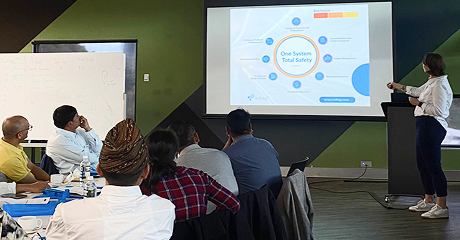

Operational Intelligence For Complex Operations
AI systems which continuously understands how changing
operational conditions interact to predict risk,
improve performance and support better decisions.
Know How Your Operation
Should Be Performing
Complex operations generate immense amounts of information, but individual systems only explain what is happening within their own area. They cannot determine whether the operation as a whole is performing as intended.
Atlas establishes an operational model based on expected conditions, critical relationships, risk controls, performance requirements and operational objectives. This creates a reference for how the operation should perform safely, efficiently and productively.
As live conditions change, Atlas compares actual performance against the model to detect deviations, understand their wider impact, predict likely consequences and recommend or automate corrective action.
See The Factors That Create Risk
And Influence Performance
Fatal Risk Intelligence
Predict and prevent critical operational risks before they become incidents.
Production Intelligence
Improve operations by identifying the conditions that limit performance.
Operational Intelligence
Connect operational information, identify relationships and gain the context needed for better decisions.
Trusted in environments
Where visibility matters most
Designed for complex operational environments where visibility, coordination and informed decision-making are critical. Supporting owners, contractors, operators and project teams across mining, tunnelling, infrastructure and critical operations internationally.
 Canada
USA
Europe
Africa
Singapore
Australia
New Zealand
Canada
USA
Europe
Africa
Singapore
Australia
New Zealand
- Major tunnel construction projects
- Underground mining operations
- Open-cut mining operations
- Civil infrastructure projects
- Bridge construction and refurbishment
- Airports and transport infrastructure
- Healthcare and critical facilities
- Heavy industrial operations
“iottag delivered the mother of all operational intelligence systems, the ROI is compounding across our projects.”





Why Industry Leaders Choose iottag
Success depends on combining the right technology, operational understanding and industry expertise to deliver meaningful outcomes in the field.
iottag is trusted by organisations operating in some of the world's most complex and demanding environments because we focus on solving real operational problems, not simply deploying technology.
Operational intelligence first
Most systems provide visibility into a single operational domain, iottag helps organisations understand how workforce, assets, environment, and systems interact across the entire operation.
Engineered End-to-End
Most systems provide visibility into a single operational domain, iottag helps organisations understand how workforce, assets, environment, and systems interact across the entire operation.
Built for complex operations
Most systems provide visibility into a single operational domain, iottag helps organisations understand how workforce, assets, environment, and systems interact across the entire operation.
Open by design
Most systems provide visibility into a single operational domain, iottag helps organisations understand how workforce, assets, environment, and systems interact across the entire operation.
Operational Understanding Meets Engineering Excellence
By combining engineering, data science, operational technology and field expertise, iottag helps organisations solve complex operational challenges with confidence.
Why iottag arrow_right_altDelivering Value With Operational Intelligence
Every organisation has different priorities.
Whether your focus is improving safety, increasing production,
optimising assets or reducing operating costs, iottag transforms operational intelligence into measurable business outcomes
across the entire operation.
Safety
- checkFatal Risk Prevention
- checkEmergency Response
- checkAutomated Compliance
Operation
- checkProduction Optimisation
- checkProcess Efficiency
- checkEnergy Optimisation
Assets
- checkPredictive Maintenance
- checkAsset Utilisation
- checkResource Planning
Business
- checkExecutive Intelligence
- checkOperational Assurance
- checkCost Reduction
Purpose built technology
for challenging environments
Purpose-Built Technology Designed, Supported And Maintained By iottag
Operational environments demand technology that performs reliably every day.
That is why iottag designs, engineers, supports and maintains the core components of its platform, providing organisations with a single partner responsible for performance across the entire solution lifecycle.
At the centre of this ecosystem is the Vector Tag — a purpose-built industrial wearable designed to support workforce visibility, emergency response and operational awareness in demanding environments.

Unlike many providers that rely on third-party hardware, iottag designs, supports and maintains its own wearable technology — enabling tighter integration, stronger reliability, faster innovation and a single point of accountability across the solution.
Explore Engineering & Hardware arrow_right_alt
Built to Manage Every Operational Asset
From equipment and materials to tools and critical infrastructure,
iottag creates a live operational understanding of every moving part across your operation.
On and off site, above and below the ground.
Every Assets Everywhere
Executive Insight & Portfolio Visibility
While operational teams use iottag to manage daily activities, leadership teams gain access to portfolio-level dashboards that provide visibility across projects, sites, contractors and operational environments.
Monitor safety performance, operational trends, production outcomes and critical KPIs through a consistent reporting framework that supports governance, benchmarking and strategic decision-making.

Transform operational complexity into actionable intelligence
Discover how Operational Intelligence can improve safety, productivity, production and operational performance across your operation.